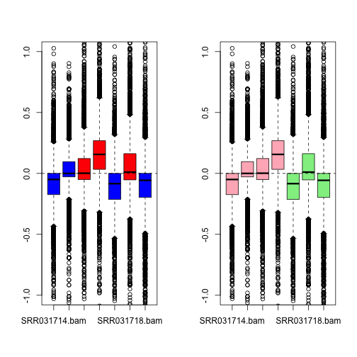
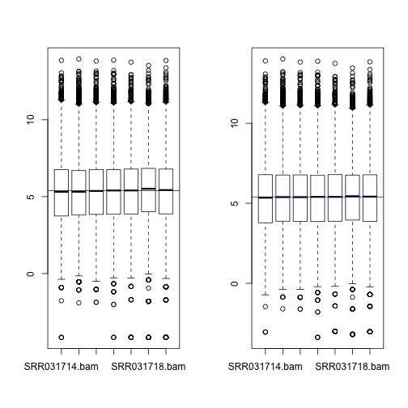
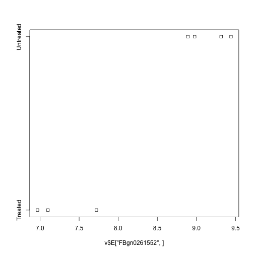

RNA-seq analysis in R
Solutions: Analysis of Pasilla Knock-down Experiment in Drosophila
Author: Belinda Phipson and Jovana Maksimovic
Data files needed
- counts_Drosophila.txt
- targetsD.txt
Available from https://figshare.com/s/e08e71c42f118dbe8be6.
Libraries needed
- limma
- edgeR
- org.Dm.eg.db
- EDASeq
- gplots
- RColorBrewer
Introduction
The RNA-Seq data we will be analysing today come from this published paper:
Brooks, A.N., Yang, L., Duff, M.O., Hansen, K.D., Park, J.W., Dudoit, S., Brenner, S.E. and Graveley, B.R. (2011) Conservation of an rna regulatory map between drosophila and mammals. Genome Research, 21(2), 193-202.
http://www.ncbi.nlm.nih.gov/pubmed/20921232
This is a publicly available dataset, deposited in the Short Read Archive. The RNA-sequence data are available from GEO under accession nos. GSM461176-GSM461181. The authors combined RNAi and RNASeq to identify exons regulated by Pasilla, the Drosophila melanogaster ortholog of mammalian NOVA1 and NOVA2. They showed that the RNA regulatory map of Pasilla and NOVA1/2 is highly conserved between insects and mammals. NOVA1 and NOVA2 are best known for being involved in alternative splicing. Cells from S2-DRSC, which is an embryonic cell line, were cultured and subjected to a treatment in order to knock-down Pasilla. The four untreated and three treated RNAi samples were used in the analysis. The treated samples had Pasilla knocked down by approximately 60% compared to the untreated samples. Some of the samples had undergone paired end sequencing while other samples were sequenced from one end only.
The reads were aligned to the Drosophila reference genome, downloaded from Ensembl, using the tophat aligner. The reads were summarised at the gene-level using htseq-count, a function from the tool HTSeq (http://wwwhuber.embl.de/users/anders/HTSeq/doc/overview.html).
For the purpose of today’s workshop, we will be analysing the gene level counts.
Reading data into R
First, let’s load all the libraries we will need today.
library(limma)
library(edgeR)
library(EDASeq)
library(gplots)
library(RColorBrewer)
library(org.Dm.eg.db)Error in library(org.Dm.eg.db): there is no package called 'org.Dm.eg.db'
Next, read in the data and targets file:
counts <- read.delim(file="data/counts_Drosophila.txt")
targets <- read.delim(file="data/SampleInfo_Drosophila.txt")Check that the data has read in correctly
head(counts) SRR031714.bam SRR031716.bam SRR031724.bam SRR031726.bam
FBgn0037213 157 142 213 291
FBgn0000500 0 3 4 5
FBgn0053294 14 18 13 19
FBgn0037215 1666 1948 1662 1833
FBgn0037217 13 19 18 23
FBgn0037218 732 755 803 906
SRR031708.bam SRR031718.bam SRR031728.bam
FBgn0037213 123 225 164
FBgn0000500 2 1 1
FBgn0053294 22 34 22
FBgn0037215 1625 1701 1870
FBgn0037217 15 15 17
FBgn0037218 695 767 793
targets SampleName Group Library
1 SRR031714 Untreated PE
2 SRR031716 Untreated PE
3 SRR031724 Treated PE
4 SRR031726 Treated PE
5 SRR031708 Untreated SE
6 SRR031718 Treated SE
7 SRR031728 Untreated SE
Filtering out lowly expressed genes
Our main interest is in testing the treated versus untreated groups. To check how many samples we have in each group we can use the table command.
table(targets$Group)
Treated Untreated
3 4
The minimum sample size is 3. Let’s check the relationship between CPM and counts to see what CPM threshold we should be imposing. Recall we’re looking for a CPM that corresponds to a count of roughly 10-15.
mycpm <- cpm(counts)
plot(counts[,1],mycpm[,1],xlim=c(0,20),ylim=c(0,5))
abline(v=10,col=2)
abline(h=2,col=4)
We can filter on a CPM of 2 or 3 in at least 3 samples.
thresh <- mycpm > 2
keep <- rowSums(thresh) >= 3
table(keep)keep
FALSE TRUE
7345 7524
counts.keep <- counts[keep,]
dim(counts.keep)[1] 7524 7
We are filtering out about half our genes.
Convert to DGEList object
y <- DGEList(counts.keep)Quality control
Let’s do a number of quality control plots.
First, check the library sizes:
barplot(y$samples$lib.size)
Next check the distribution of the counts using an relative log expression plot:
plotRLE(y$counts)
It’s a bit hard to see what’s going on so we can zoom in to the y axis
plotRLE(y$counts,ylim=c(-1,1))
We can colour by our groups, or by the different library prep.
par(mfrow=c(1,2))
group.col <- c("red","blue")[targets$Group]
plotRLE(y$counts,ylim=c(-1,1),col=group.col)
lib.col <- c("light pink","light green")[targets$Library]
plotRLE(y$counts,ylim=c(-1,1),col=lib.col)
Looks like some bias going on!
Finally, let’s check our MDS plots.
par(mfrow=c(1,1))
plotMDS(y)
par(mfrow=c(1,2))
plotMDS(y,col=group.col)
legend("topright",legend=levels(targets$Group),fill=c("red","blue"))
plotMDS(y,col=lib.col)
legend("topleft",legend=levels(targets$Library),fill=c("light pink","light green"))
Hierarchical clustering with heatmap.2
First we need a matrix of log counts:
logcounts <- cpm(y,log=TRUE)Get variances for genes:
var_genes <- apply(logcounts, 1, var)Get top 500 most variable
select_var <- names(sort(var_genes, decreasing=TRUE))[1:500]highly_variable_lcpm <- logcounts[select_var,]
dim(highly_variable_lcpm)[1] 500 7
mypalette <- brewer.pal(11,"RdYlBu")
morecols <- colorRampPalette(mypalette)
# Plot the heatmap
heatmap.2(highly_variable_lcpm,col=rev(morecols(50)),trace="none", main="Top 500 most variable genes across samples",ColSideColors=group.col,scale="row",margins=c(10,5))
heatmap.2(highly_variable_lcpm,col=rev(morecols(50)),trace="none", main="Top 500 most variable genes across samples",ColSideColors=lib.col,scale="row",margins=c(10,5))
Normalisation
Let’s do TMM normalisation
y <- calcNormFactors(y)
y$samples group lib.size norm.factors
SRR031714.bam 1 4198181 0.9805029
SRR031716.bam 1 4740969 0.9566649
SRR031724.bam 1 4601291 0.9936278
SRR031726.bam 1 5195516 1.0019699
SRR031708.bam 1 3980986 1.0036556
SRR031718.bam 1 4320527 1.0556860
SRR031728.bam 1 4031608 1.0106328
par(mfrow=c(1,2))
plotMD(logcounts,column=2)
abline(h=0,col="grey")
plotMD(y,column = 2)
abline(h=0,col="grey")
Differential expression
Set up design matrix
We want to test for differences between the treated and untreated samples. However, we know that the library preparation adds variability to the data, so we need to account for it in our model. We do this by modelling both Group and Library as variables in our design matrix. This is known as an additive model.
design <- model.matrix(~targets$Library + targets$Group)
design (Intercept) targets$LibrarySE targets$GroupUntreated
1 1 0 1
2 1 0 1
3 1 0 0
4 1 0 0
5 1 1 1
6 1 1 0
7 1 1 1
attr(,"assign")
[1] 0 1 2
attr(,"contrasts")
attr(,"contrasts")$`targets$Library`
[1] "contr.treatment"
attr(,"contrasts")$`targets$Group`
[1] "contr.treatment"
colnames(design) <- c("Int","SEvsPE","UVsT")Voom transform the data
par(mfrow=c(1,1))
v <- voom(y,design,plot=TRUE)
par(mfrow=c(1,2))
boxplot(logcounts)
abline(h=median(logcounts),col=4)
boxplot(v$E)
abline(h=median(v$E),col=4)
Test for differential expression
fit <- lmFit(v,design)
fit <- eBayes(fit)
results <- decideTests(fit)
summary(results) Int SEvsPE UVsT
-1 4 125 440
0 66 7142 6641
1 7454 257 443
topTable(fit,coef=3,sort.by="p") logFC AveExpr t P.Value adj.P.Val
FBgn0025111 -2.863110 6.253448 -31.24326 9.756044e-13 4.734428e-09
FBgn0003360 3.089242 7.778378 30.57062 1.258487e-12 4.734428e-09
FBgn0026562 2.422219 11.359837 24.25592 1.868075e-11 4.685133e-08
FBgn0029167 2.247086 7.825170 21.77945 6.509505e-11 1.224438e-07
FBgn0035085 2.677008 5.180607 18.97509 3.188148e-10 4.797524e-07
FBgn0039155 4.272254 4.800907 17.42222 8.476440e-10 1.062946e-06
FBgn0040091 1.559497 6.245766 15.43293 3.363833e-09 3.615639e-06
FBgn0023479 1.576335 7.768886 15.06473 4.419245e-09 3.877495e-06
FBgn0029896 2.312097 4.881577 15.00033 4.638152e-09 3.877495e-06
FBgn0027279 1.180272 7.760889 14.37303 7.503535e-09 5.645660e-06
B
FBgn0025111 19.04663
FBgn0003360 19.04370
FBgn0026562 16.57869
FBgn0029167 15.57725
FBgn0035085 13.66077
FBgn0039155 12.15024
FBgn0040091 11.72125
FBgn0023479 11.43434
FBgn0029896 11.25267
FBgn0027279 10.89435
Add annotation from org.Dm.eg.db
The rownames of the fit object are http://flybase.org/ ids.
First we need to decide what information we want. In order to see what we can extract we can run the columns function on the annotation database.
columns(org.Dm.eg.db)Error in eval(expr, envir, enclos): could not find function "columns"
We definitely want gene symbols and perhaps the full gene name and Entrez id. Let’s build up our annotation information in a separate data frame using the select function. Note, by default, the select function assumes that the keys provided are Entrez ids. However, in this case we are using FlyBase ids as the keys. As such, we need to give the select function this information using the keytype argument which we will set to "FLYBASE".
ann <- select(org.Dm.eg.db,keys=rownames(fit),columns=c("FLYBASE","ENTREZID","SYMBOL","GENENAME"),keytype="FLYBASE")Error in eval(expr, envir, enclos): could not find function "select"
# Have a look at the annotation
head(ann)Error in head(ann): object 'ann' not found
Let’s double check that the FLYBASE column matches exactly to our fit rownames.
table(ann$FLYBASE==rownames(fit))Error in eval(expr, envir, enclos): object 'ann' not found
We can slot in the annotation information into the genes slot of fit. (Please note that if the select function returns a 1:many mapping then you can’t just append the annotation to the fit object. An alternative way to get annotation is shown below.)
fit$genes <- annError in eval(expr, envir, enclos): object 'ann' not found
Now when we run the topTable command, the annotation information should be included in the output.
topTable(fit,coef=3,sort.by="p") logFC AveExpr t P.Value adj.P.Val
FBgn0025111 -2.863110 6.253448 -31.24326 9.756044e-13 4.734428e-09
FBgn0003360 3.089242 7.778378 30.57062 1.258487e-12 4.734428e-09
FBgn0026562 2.422219 11.359837 24.25592 1.868075e-11 4.685133e-08
FBgn0029167 2.247086 7.825170 21.77945 6.509505e-11 1.224438e-07
FBgn0035085 2.677008 5.180607 18.97509 3.188148e-10 4.797524e-07
FBgn0039155 4.272254 4.800907 17.42222 8.476440e-10 1.062946e-06
FBgn0040091 1.559497 6.245766 15.43293 3.363833e-09 3.615639e-06
FBgn0023479 1.576335 7.768886 15.06473 4.419245e-09 3.877495e-06
FBgn0029896 2.312097 4.881577 15.00033 4.638152e-09 3.877495e-06
FBgn0027279 1.180272 7.760889 14.37303 7.503535e-09 5.645660e-06
B
FBgn0025111 19.04663
FBgn0003360 19.04370
FBgn0026562 16.57869
FBgn0029167 15.57725
FBgn0035085 13.66077
FBgn0039155 12.15024
FBgn0040091 11.72125
FBgn0023479 11.43434
FBgn0029896 11.25267
FBgn0027279 10.89435
If for some reason the select function doesn’t work, or the result is a 1:many mapping, there is a less elegant way to get the annotations using the toTable command.
# Let's see what we can get in table format from org.Dm.eg.db
ls("package:org.Dm.eg.db")Error in as.environment(pos): no item called "package:org.Dm.eg.db" on the search list
# Get annotation
fly <- toTable(org.Dm.egFLYBASE)Error in eval(expr, envir, enclos): could not find function "toTable"
head(fly)Error in head(fly): object 'fly' not found
symbol <- toTable(org.Dm.egSYMBOL)Error in eval(expr, envir, enclos): could not find function "toTable"
genename <- toTable(org.Dm.egGENENAME)Error in eval(expr, envir, enclos): could not find function "toTable"
# We can use the merge command to merge two dataframes
ann1 <- merge(fly,symbol,by="gene_id")Error in merge(fly, symbol, by = "gene_id"): object 'fly' not found
head(ann1)Error in head(ann1): object 'ann1' not found
# Add genename table to ann1
ann2 <- merge(ann1,genename,by="gene_id")Error in merge(ann1, genename, by = "gene_id"): object 'ann1' not found
head(ann2)Error in head(ann2): object 'ann2' not found
Now we need to match up between rownames(fit) and the ensemble gene id in ann2.
m <- match(rownames(fit),ann2$flybase_id)Error in match(rownames(fit), ann2$flybase_id): object 'ann2' not found
table(is.na(m)) # check for unmatched rowsError in eval(expr, envir, enclos): object 'm' not found
ann3 <- ann3[m[!is.na(m)],] # exclude unmatched rowsError in eval(expr, envir, enclos): object 'ann3' not found
# compare the results in ann3 to what is in the fit object
head(ann3)Error in head(ann3): object 'ann3' not found
head(fit$genes)NULL
topTable(fit,coef=3,sort.by="p") logFC AveExpr t P.Value adj.P.Val
FBgn0025111 -2.863110 6.253448 -31.24326 9.756044e-13 4.734428e-09
FBgn0003360 3.089242 7.778378 30.57062 1.258487e-12 4.734428e-09
FBgn0026562 2.422219 11.359837 24.25592 1.868075e-11 4.685133e-08
FBgn0029167 2.247086 7.825170 21.77945 6.509505e-11 1.224438e-07
FBgn0035085 2.677008 5.180607 18.97509 3.188148e-10 4.797524e-07
FBgn0039155 4.272254 4.800907 17.42222 8.476440e-10 1.062946e-06
FBgn0040091 1.559497 6.245766 15.43293 3.363833e-09 3.615639e-06
FBgn0023479 1.576335 7.768886 15.06473 4.419245e-09 3.877495e-06
FBgn0029896 2.312097 4.881577 15.00033 4.638152e-09 3.877495e-06
FBgn0027279 1.180272 7.760889 14.37303 7.503535e-09 5.645660e-06
B
FBgn0025111 19.04663
FBgn0003360 19.04370
FBgn0026562 16.57869
FBgn0029167 15.57725
FBgn0035085 13.66077
FBgn0039155 12.15024
FBgn0040091 11.72125
FBgn0023479 11.43434
FBgn0029896 11.25267
FBgn0027279 10.89435
Let’s check the expression of pasilla.
ps <- grep("pasilla",fit$genes$GENENAME)
topTable(fit[ps,],coef=3)data frame with 0 columns and 0 rows
Plots after testing for DE
par(mfrow=c(1,2))
plotMD(fit,coef=3,status=results[,"UVsT"])
volcanoplot(fit,coef=3,highlight=100,names=fit$genes$symbol)
stripchart(v$E["FBgn0025111",]~targets$Group)
# Check expression of Pasilla
stripchart(v$E["FBgn0261552",]~targets$Group)
Testing relative to a threshold
fit.treat <- treat(fit,lfc=1)
res.treat <- decideTests(fit.treat)
summary(res.treat) Int SEvsPE UVsT
-1 2 13 10
0 350 7510 7496
1 7172 1 18
topTreat(fit.treat,coef=3) logFC AveExpr t P.Value adj.P.Val
FBgn0003360 3.089242 7.778378 20.674784 5.940461e-11 2.711163e-07
FBgn0025111 -2.863110 6.253448 -20.330911 7.206708e-11 2.711163e-07
FBgn0026562 2.422219 11.359837 14.241997 4.158446e-09 1.042938e-05
FBgn0039155 4.272254 4.800907 13.344224 8.653631e-09 1.627748e-05
FBgn0029167 2.247086 7.825170 12.087142 2.578989e-08 3.880863e-05
FBgn0035085 2.677008 5.180607 11.886920 3.099362e-08 3.886600e-05
FBgn0034736 3.407306 3.372966 8.780952 7.931358e-07 8.094637e-04
FBgn0000071 -2.572434 4.209333 -8.710932 8.606738e-07 8.094637e-04
FBgn0029896 2.312097 4.881577 8.512571 1.091548e-06 8.898178e-04
FBgn0039827 3.925533 3.204658 8.449359 1.182639e-06 8.898178e-04
plotMD(fit.treat,coef=3,status=res.treat[,"UVsT"])
abline(h=0,col="grey")
Gene set testing with goana
go <- goana(fit, coef="UVsT",species = "Dm", geneid="gene_id")Error in goana.MArrayLM(fit, coef = "UVsT", species = "Dm", geneid = "gene_id"): Column gene_id not found in de$genes
topGO(go, n=10)Error in is.data.frame(results): object 'go' not found